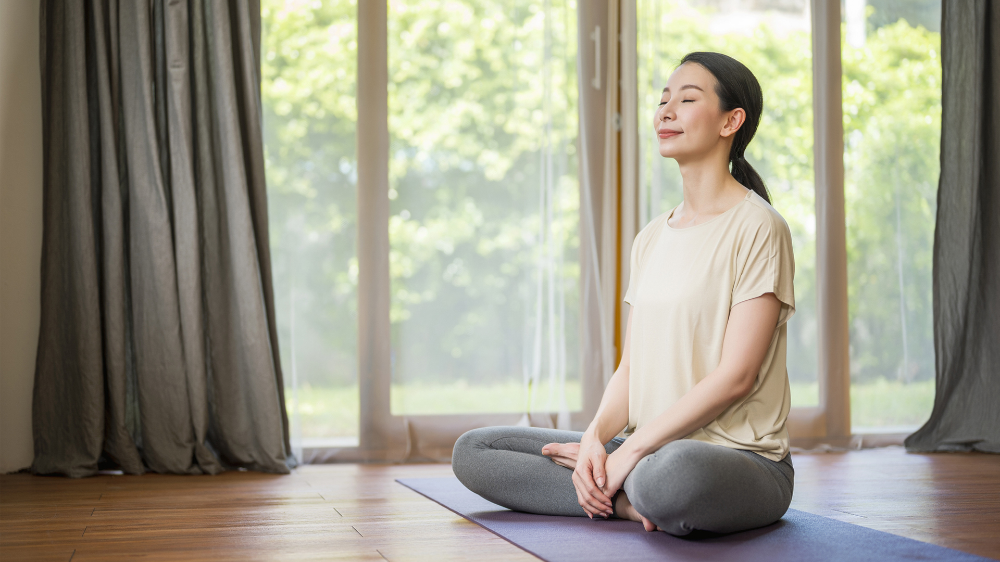

What is posture?
Posture is how you hold your body. There are two types:
Dynamic posture is how you hold yourself when you are moving, like when you are walking, running, or bending over to pick up something. Static posture is how you hold yourself when you are not moving, like when you are sitting, standing, or sleeping.
It is important to make sure that you have good dynamic and static posture.The key to good posture is the position of your spine. Your spine has three natural curves at your neck, mid back, and low back.
Correct posture should maintain these curves, but not increase them. Your head should be above your shoulders, and the top of your shoulder should be over the hips.
